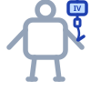
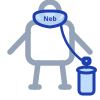

Medication Route Icons — all use the same body, routes overlay


Last icon = IV + IO + IM stacked (transparent layers, one body). Use when a drug allows multiple routes — e.g. Diphenhydramine IV/IO/IM.
EMT
Manage Airway
Assess and support as appropriate — see Airway Algorithm Blue 2
1
Shock present?
If yes → Medical Shock protocol Gold 14
2
EPINEPHrine
Anterolateral thigh. Auto-injector or Check & Inject.
Adult: 0.3 mg IM <25 kg: 0.15 mg IM >25 kg: 0.3 mg IM
Repeat q5 min prn · Notify OLMC
Adult: 0.3 mg IM <25 kg: 0.15 mg IM >25 kg: 0.3 mg IM
Repeat q5 min prn · Notify OLMC
3
Request ALS
If available, request advanced life support backup
4
Still wheezing at 5 min?
If yes → ipratropium/albuterol — see Bronchospasm protocol Blue 6
5
Limit Allergen Exposure
Local measures to prevent further allergen absorption
6
Advanced EMT
EPINEPHrine
Same dosing as EMT step.
Adult: 0.3 mg IM <25 kg: 0.15 mg IM >25 kg: 0.3 mg IM
Repeated doses needed → Request ALS
Adult: 0.3 mg IM <25 kg: 0.15 mg IM >25 kg: 0.3 mg IM
Repeated doses needed → Request ALS
7
IV Access
Establish IV en route
8
Cardiac Monitor
Apply continuous cardiac monitoring
9
Shock present?
If yes → IV fluid bolus
10
OLMC Consult
Minor symptoms / single-dose resolution → may cancel ALS with OLMC approval
11
Paramedic
Glucagon
Beta-blocker pts not responding to Epi
1 mg IV q5 min
1 mg IV q5 min
12
Diphenhydramine
Adult: 25–50 mg IV/IO/IM
Peds: 1–2 mg/kg (max 50 mg)
13
Bronchodilator (choose one)
Repeat q5 min prn:
Albuterol 2.5 mg neb Epi 1 mg/mL (1 mL) + NS neb Racemic Epi 2.25% (0.5 mL) + NS neb
Albuterol 2.5 mg neb Epi 1 mg/mL (1 mL) + NS neb Racemic Epi 2.25% (0.5 mL) + NS neb
14